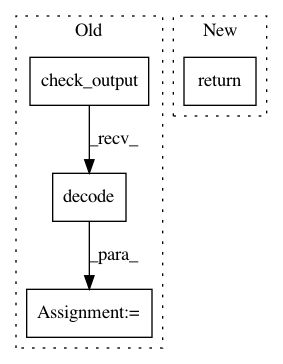

477137d143d4ac140291b44a1410a2e0b27e2b91,compiler/quilt/test/test_cli.py,TestCLI,execute,#TestCLI#Any#,465
Before Change
env = self.env
cmd = quilt + cli_args
try:
result = json.loads(check_output(cmd, env=env).decode())
result["return code"] = 0
except CalledProcessError as error:
result["return code"] = error.returncode
return result
After Change
return self.execute_cli(cli_args)
// Fast mode -- calls main.main(cli_args) instead of actually executing quilt
else:
return self.execute_fast(cli_args)
def execute_cli(self, cli_args):
Execute quilt <cli_args> by executing quilt in a subprocess
In pattern: SUPERPATTERN
Frequency: 3
Non-data size: 4
Instances
Project Name: quiltdata/quilt
Commit Name: 477137d143d4ac140291b44a1410a2e0b27e2b91
Time: 2018-01-05
Author: aeon.descriptor@gmail.com
File Name: compiler/quilt/test/test_cli.py
Class Name: TestCLI
Method Name: execute
Project Name: ray-project/ray
Commit Name: 82f9c7014e2d0acd3e3869066f5dc3142ec9e7a7
Time: 2020-12-17
Author: 62982571+Gekho457@users.noreply.github.com
File Name: python/ray/autoscaler/_private/command_runner.py
Class Name: KubernetesCommandRunner
Method Name: _home
Project Name: deepgram/kur
Commit Name: c10177e717a57c5db8b0e8ab7efa07051e77c4be
Time: 2016-12-05
Author: ajsyp@syptech.net
File Name: setup.py
Class Name:
Method Name: get_version